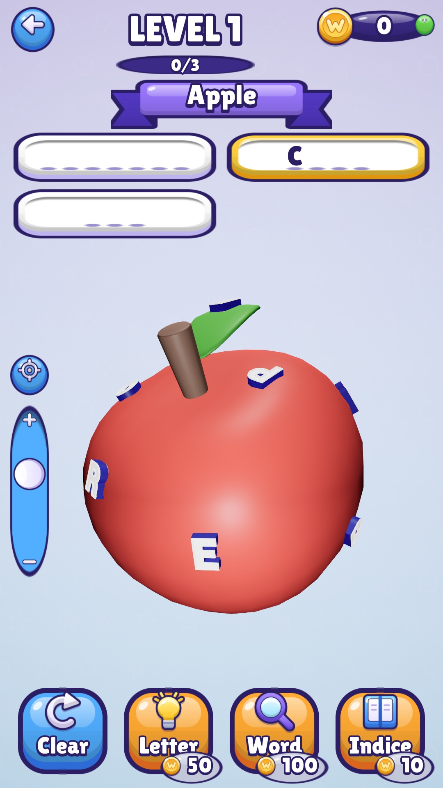
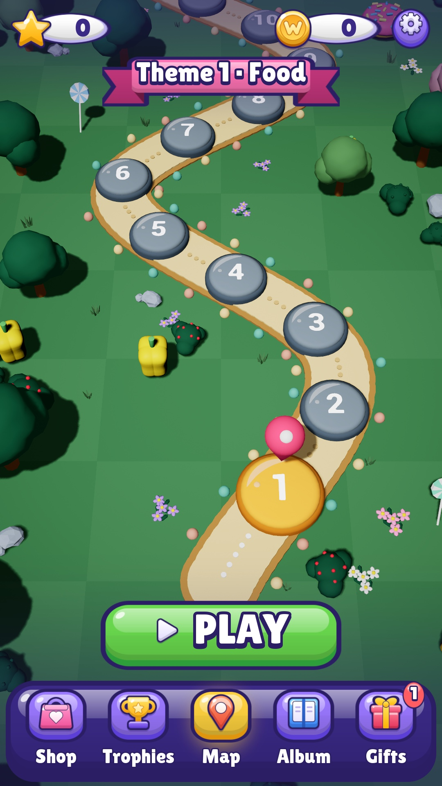

Find hidden words on rotating 3D objects
Spin a burger, a donut or a pizza in 3D and find the words hidden in its letters. Read the topic, pick a word, then tap its letters in order. Watch out for decoy letters! Find all the words to earn stars and unlock the next level.
Explore 30 food-themed levels, track your progress on a 3D map and use hints when you get stuck. The game is designed for iPhone and Android, with words and menus in English and French.
See the game on Android


FAQ
How do I play?
Drag your finger on the object to rotate it and use the vertical slider to zoom. Tap a word at the top of the screen, then tap its letters on the object in the right order. In level 1, an animated hand shows you the gestures.
Can I play offline?
Yes. Levels work without an internet connection and progress is saved on your device. Optional rewarded video ads require a connection and depend on availability.
I'm stuck on a level
Use a hint: it reveals a letter or a whole word in exchange for coins. You earn coins for every level you complete. If you run out of coins, the game gives you some.
My progress is gone
Your progress (levels, stars, coins, settings) is saved on your phone only. It is erased if you delete the game, and it doesn't move from one phone to another.
How do I change the language?
The game follows your phone's language: French if your phone is set to French, English otherwise. Change the language in your phone's settings, then restart the game.
Turn off sound, music or vibrations
Open Settings from the home screen or the map.
Ads and privacy
Google AdMob ads are shown between levels, and optional videos give coins. In Europe, you can review your consent choice with the Privacy button in Settings; on iPhone, ad tracking can also be changed in Settings > Privacy & Security > Tracking. Details in the privacy policy.
Contact us
A bug, a question, an idea for a word or a level?
Write to labasquelucas@gmail.com
Tell us your phone model and the level number: we answer within a few days.